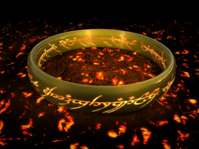

Do you believe in magic?
Ok most of you would probably say no.
But we have something
that can make you become invisible,
and at the same time physically can't be broken.
We mean literally indestructible,
and we want to sell it for
you. We know what you are thinking, YES, such thing does exist,
and NO, we are very very serious. Just check it out:
Overview
- Name: The One Ring
- Creator: Sauron
- Made in: Mount Doom
- Feature: Magical
- Material: Pure gold
- Durability: Indestructible
- Price: A$56,000
- Shipping: Free
The One Ring
Appearance
Here are some images of the One Ring and you can see how shiny and beautiful it looks. We don't have much to say about this aspect.
Indestructibility
Here is a short video of our last year annual conference when
one of our quality assurance technicians tried to test the
durability of the One Ring. Again, please have a look at
the first minute of the video and evaluate the Ring by
yourself:
The Ring-inscription
As you've noticed, in some pictures, the Ring has a line containing old characters around its body. This is called the Ring-inscription and only shows up whenever the Ring is put into fire.
The Ring-inscription
The Ring-inscription is a Black Speech inscription in the Tengwar upon the One Ring, symbolising the Ring's power to control the other Rings of Power. A drawing of the Inscription appears in Book I, Chapter 2 of The Fellowship of the Ring, "The Shadow of the Past". A transliteration appears in Book II, Chapter 2, "The Council of Elrond", where the inscription is read by Gandalf (listen to the inscription):
"Ash nazg durbatulûk, ash nazg gimbatul, ash nazg thrakatulûk, agh burzum-ishi krimpatul."
The One Ring in normal state
The One Ring when put into flame
These words, in the Black Speech of Mordor, are physically painful to elves, men, and likely dwarves, including Elrond, who hears them (as well as any other words of that language) even at the Council of Elrond, most probably because of the power and the shadow they bring (the Shadow being the more harmful to the elves). The inscription uses the Feanorian Characters (Tengwar) because all forms of writing Tolkien describes at that time were invented by the Elves.
Roughly translated, they mean:
"One Ring to rule them all, One ring to find them; One ring to bring them all and in the darkness bind them."
The entire poem reads:
"Three Rings for the Elven-kings under the sky,
Seven for the Dwarf-lords in their halls of stone,
Nine for Mortal Men doomed to die,
One for the Dark Lord on his dark throne
In the Land of Mordor where the Shadows lie.
One Ring to rule them all, One Ring to find them,
One Ring to bring them all and in the darkness bind them
In the Land of Mordor where the Shadows lie."
Gandalf first learned of the Ring-inscription when he read the account that Isildur had written before marching north to his death and the loss of the Ring. When Isildur had cut the ring from Sauron's hand, it was burning hot, and so Isildur was able to transcribe the inscription before it faded.
Wizard Gandalf